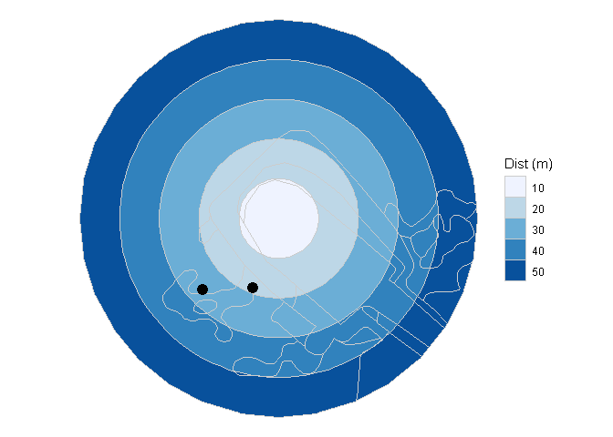

The goal of genestdwp is to obtain the dwp (density weighted proportion) file required to run GenEst. It will require shapefiles for visibility map around each turbine and the carcass locations. Both layers will tipically be obtained from GIS.

Disclaimer
This software is preliminary or provisional. No warranty, expressed or implied, is made by the mantainer. Software releases constitute no warranty. The software is provided as is on the condition that the mantainer shall not be held liable or responsible for any damages resulting from the authorized or unauthorized use of the software.
What is GenEst?
GenEst is a generalized, unbiased, fatality estimator developed by USGS. Additional information and details available from the software User Guide, the package repository, and the technical report. The material from a USGS “Into to GenEst” workshop is also available here.
Installation
You can install the released version of genestdwp from Github with:
library(devtools)
install_github("PauloEduardoCardoso/genestdwp")Contribute
You are welcome to contribute to the package development and improvment by filling an issue at the software webpage.
Example
Run a basic example with the provided data:
library(genestdwp)
library(sf)
library(tidyverse)
# Vector of distances
dist = c(10, 20, 30, 40, 50) # assumming meters
# Spatial join among visibility map and rings
rings <- viring(x=visib, d = dist)
# Carcasses
pto_carcass
#> Simple feature collection with 54 features and 4 fields
#> geometry type: POINT
#> dimension: XY
#> bbox: xmin: 128938.2 ymin: 267503.5 xmax: 133070.4 ymax: 276255.4
#> epsg (SRID): 20790
#> proj4string: +proj=tmerc +lat_0=39.66666666666666 +lon_0=1 +k=1 +x_0=200000 +y_0=300000 +ellps=intl +towgs84=-304.046,-60.576,103.64,0,0,0,0 +pm=lisbon +units=m +no_defs
#> # A tibble: 54 x 5
#> ag especie grupo tamanho geometry
#> * <dbl> <chr> <chr> <chr> <POINT [m]>
#> 1 4 Accipiter nisus Ave grande (129004.4 267938.1)
#> 2 33 Falco tinnunculus Ave grande (130302.3 270878.2)
#> 3 2 NI Ave grande (128938.2 267503.5)
#> 4 17 Accipiter nisus? Ave grande (133070.4 276255.4)
#> 5 15 Falco tinnunculus Ave grande (130588.9 270152.2)
#> 6 20 Falco tinnunculus Ave grande (131489.7 273364.7)
#> 7 1 Falco tinnunculus Ave grande (129293.7 268825.4)
#> 8 18 Falco tinnunculus Ave grande (132627.1 275476.3)
#> 9 1 Falco tinnunculus Ave grande (129281 268825)
#> 10 11 NI Corvideo Ave grande (129573.4 269429.5)
#> # ... with 44 more rows
# Get DWP
dfdwp <- dwp(vr = rings, pt = pto_carcass)
#> [1] "Attention!"
#> # A tibble: 8 x 2
#> ag visib
#> * <dbl> <chr>
#> 1 15 0
#> 2 1 0
#> 3 1 0
#> 4 9 0
#> 5 28 0
#> 6 30 0
#> 7 20 0
#> 8 31 0
#> [1] "Found n = 8 carcasses on visibility = 0! Assuming value of nearest visible area"
dfdwp
#> # A tibble: 37 x 2
#> ag dwp
#> <dbl> <dbl>
#> 1 1 0.401
#> 2 2 0.440
#> 3 3 0.476
#> 4 4 0.540
#> 5 5 0.513
#> 6 6 0.690
#> 7 7 0.569
#> 8 8 0.435
#> 9 9 0.471
#> 10 10 0.410
#> # ... with 27 more rows
# Plot some data together
ggplot() +
geom_sf(aes(fill = factor(dist)), colour = 'grey80',
size = .1, data = filter(rings, ag == 1)) +
geom_sf(data = filter(pto_carcass, ag == 1), size = 4) +
scale_fill_brewer('Dist (m)') +
theme_void()